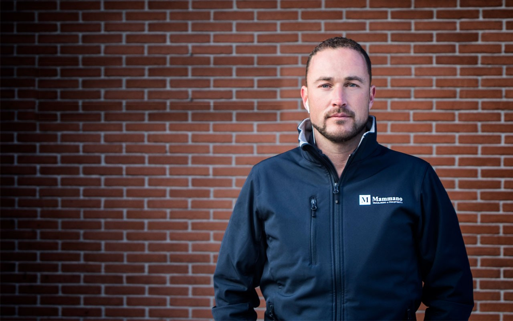
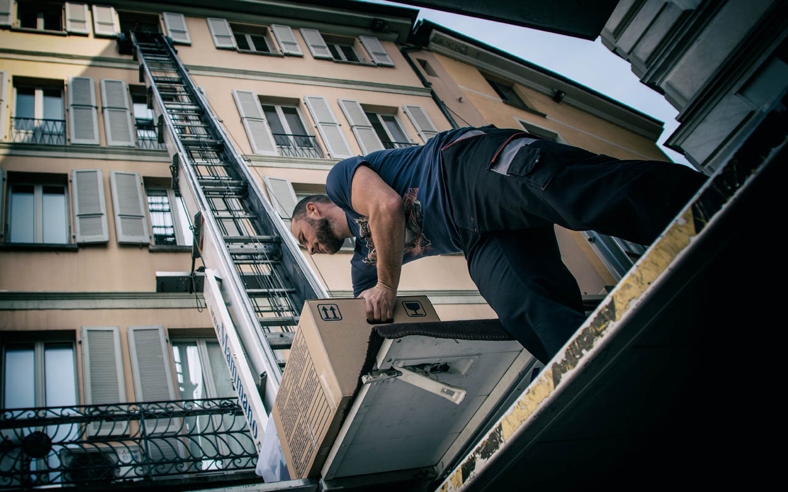
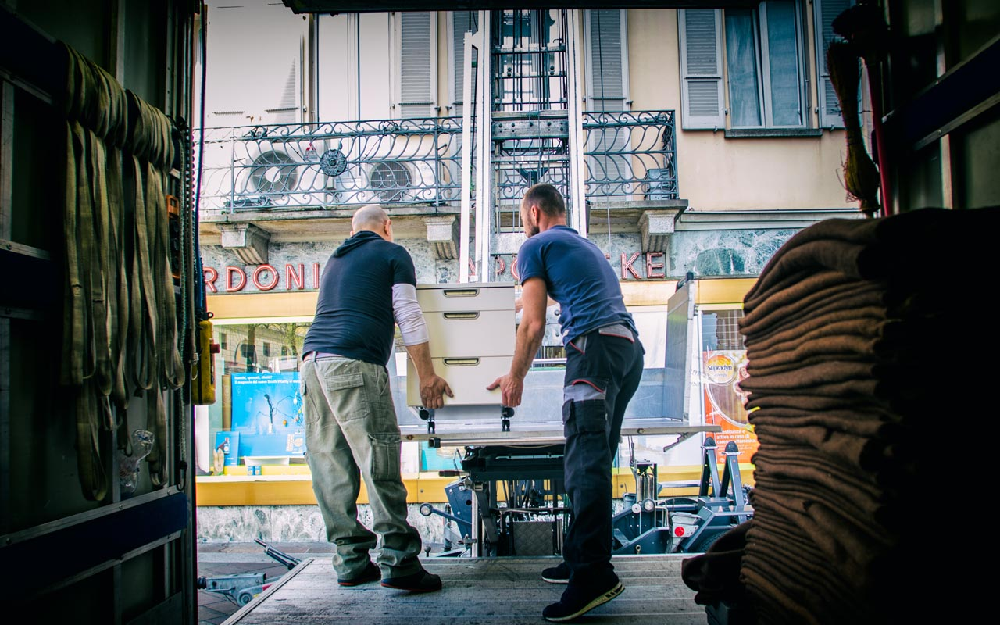
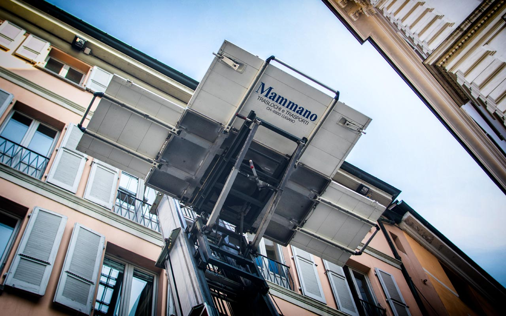
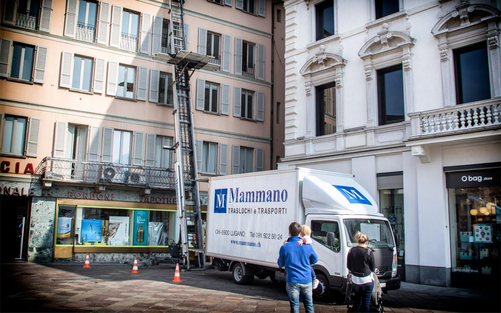
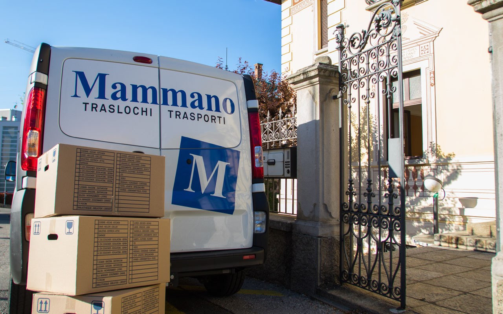
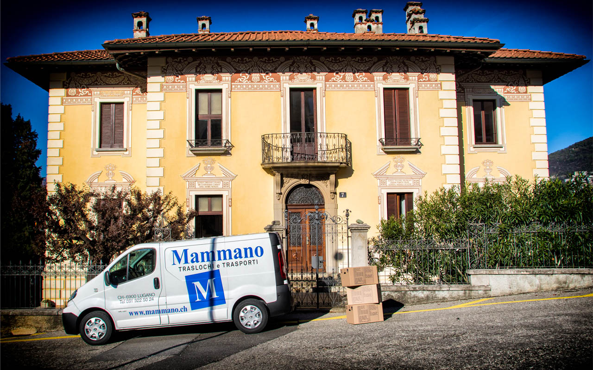

- In attività dal
- 1986
- Traslochi eseguiti
- 10'000+
- Lift esterno
- 25 m
- Sopralluogo
- Gratuito
Chi siamo
Una ditta ticinese, con persone e mezzi propri.
Azienda familiare di Lugano dal 1986, oggi guidata da Patrick Mammano. Non subappaltiamo.
Personale assunto
Traslocatori qualificati, mai occasionali.
Sopralluogo gratuito
Prima vediamo, poi facciamo il prezzo.
Mezzi propri
Camion, furgoni e lift fino a 25 m.
Servizi
Tutto il trasloco, dall'imballaggio al deposito.

Lift esterno
Piani alti, scale strette? Passiamo dalla finestra.
- Altezza fino a 25 m
- Portata 400 kg
- Operatore Mammano, sempre





Come funziona
Quattro passaggi. Zero sorprese.
Ci contattate
Modulo, telefono o WhatsApp.
Sopralluogo
Gratuito, a casa vostra.
Preventivo
Scritto, voce per voce.
Trasloco
Nel giorno concordato.
Zone servite
Da Lugano, in tutto il Ticino e oltre.
- Lugano
- Malcantone
- Mendrisio
- Chiasso
- Bellinzona
- Locarno
- Svizzera
- Italia
- Europa
Domande frequenti
Traslochi a Lugano: le domande più frequenti.
Quanto costa un trasloco a Lugano?
Dipende da volume, piani, accessi, distanza e servizi extra come imballaggio, lift o deposito. Per questo Mammano Traslochi fa prima un sopralluogo gratuito e poi invia un preventivo scritto e dettagliato, senza impegno.
Con quanto anticipo devo prenotare il trasloco?
Almeno 3–4 settimane prima, soprattutto per fine mese. Per urgenze chiamateci: verifichiamo subito la disponibilità.
Fate traslochi anche fuori dal Ticino?
Sì: in tutta la Svizzera e all'estero, verso Italia, Europa e resto del mondo, via strada, mare o aereo.